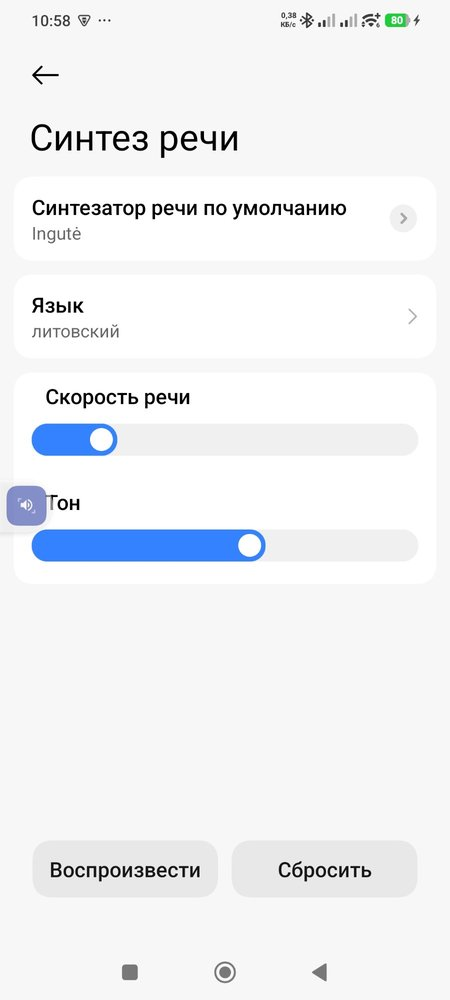
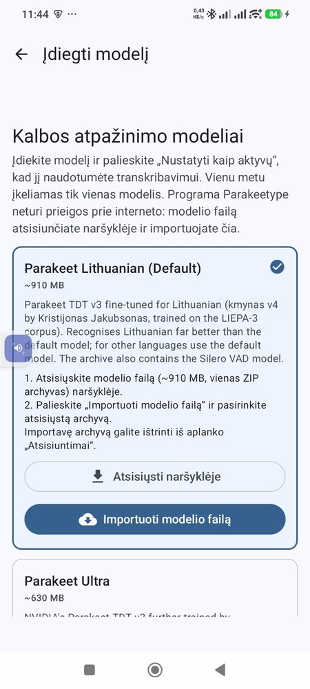
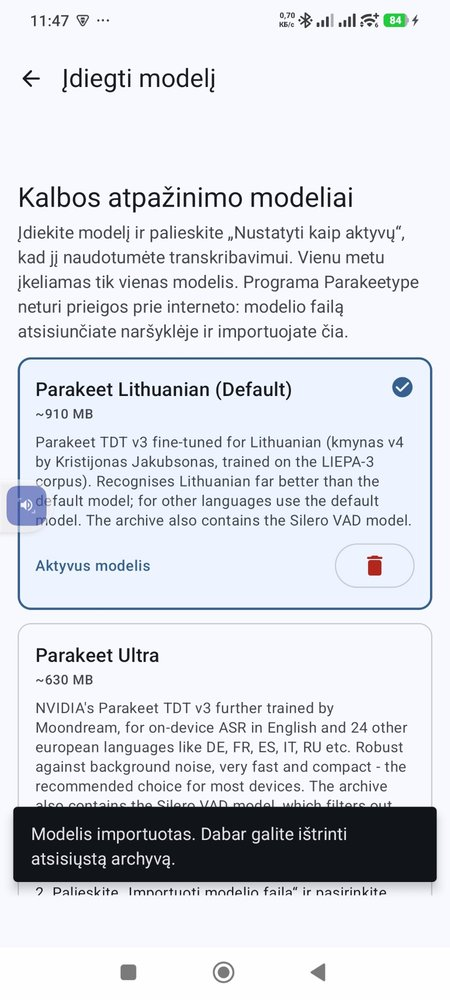
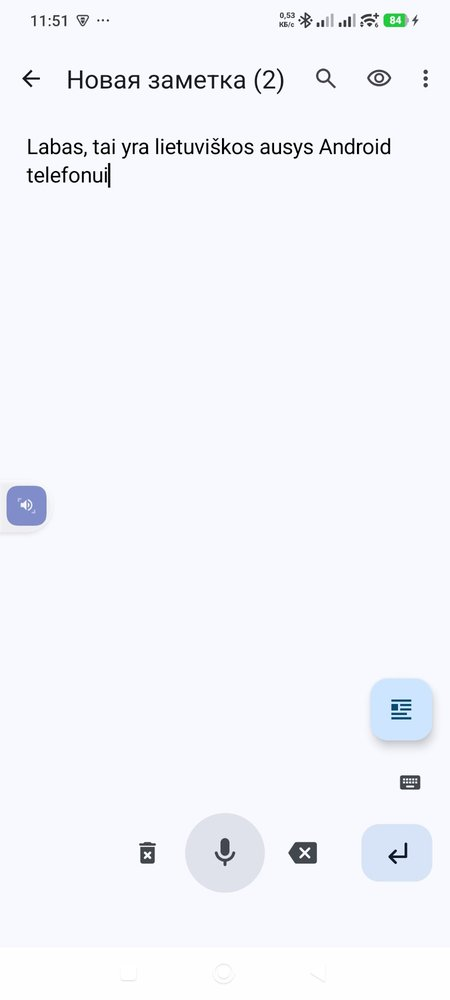
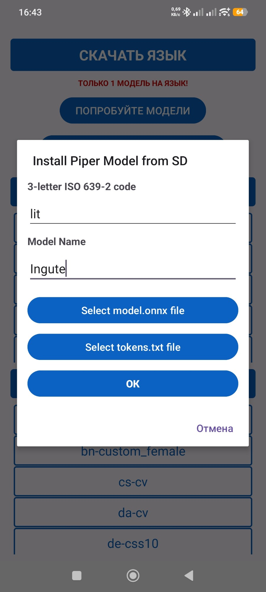
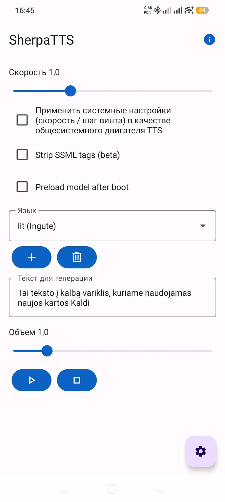
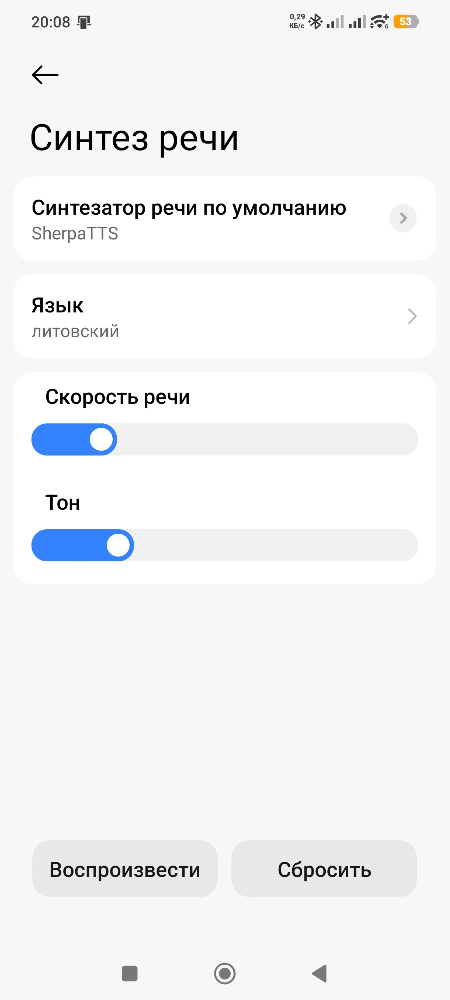
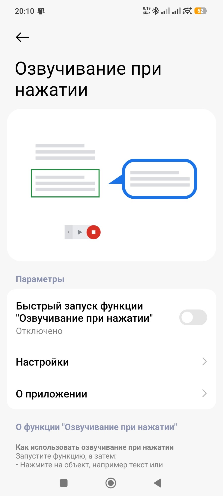
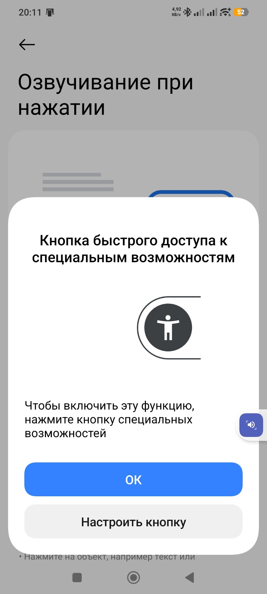

A Lithuanian voice for Android phones: Ingutė, offline.
Your phone reads Lithuanian aloud, with clear s sounds and the stress set for 189,000 word forms.
Also ears: speak Lithuanian, the phone types — in SMS, notes, the ChatGPT, Claude or Gemini app.
Since 1.2.0 — two ready-made apps: download, install, done. No F-Droid, no cable, no computer.
Installed it but not sure what next? → Everyday use
Made with AI: Claude (Anthropic) prepared and measured the package together with Robertas; the banner was made with AI. Ingutė is a synthetic voice.
Ingutė becomes the phone's text-to-speech voice, used by apps that read aloud: article and book readers, the screen reader.
The voice runs on the phone. The internet is needed once, to download the app and the voice.
The voice and both apps are free and open source, with no ads and no accounts.
The phone's pronunciation engine, eSpeak NG, often writes Lithuanian /s/ with a symbol Ingutė hardly learned. Without the fix "pasiimk skėtį" comes out as "paimk kėtį". The fix is in tokens.txt.
On its own, eSpeak NG puts the stress where the dictionary does in only 53 % of multi-syllable words: dãbar, lãbai, Lietùvos. With our lt_dict it is 99.3 %: dabar̃, labaĩ, Lietuvõs.
A Lithuanian speech recognition model listened to 12 everyday sentences. Word errors: 7.7 % without fixes, 4.4 % with the s fix, 1.1 % with the stress list as well. Tested on a Xiaomi 12T Pro, Android 15, SherpaTTS 3.4.
Android 10 or newer (Android 12 for the ears). Both files are in the release.
Ingute-1.0.apk, 151 MB)Ingute-1.0.apk to the phone and tap it (in the browser or a file manager, in Download). The phone asks whether to allow installing from this source: allow it.Parakeetype-LT-0.5.0-lt2.apk, 59 MB)parakeet-lt-kmynas-int8.zip. A minute later: Active model; you can delete the archive.



Both apps are signed with our key (certificate SHA-256 8679aa5f…afaf7f); file hashes are in SHA256SUMS.txt in the release. The app screens are in Lithuanian, the system dialogs in Russian (the phone's language). Tested on a Xiaomi 12T Pro, Android 15.
lt_LT-ingute-medium.onnx and tokens.txt.lit, name Ingute, then the model and tokens files → OK.

Ingutė now speaks with the s fix. The stress list takes one more step, from a computer.
Recent Android versions do not let file managers write into another app's folder, so lt_dict goes in with Google's adb. On the phone: Settings → About phone → tap the build number 7 times → in developer options turn on USB debugging → connect the cable and allow it.
First check that your SherpaTTS dictionary is the original (it must be 5426503daf0a29836d0f168d38b38581; if not, do not replace it):
adb shell md5sum /sdcard/Android/data/org.woheller69.ttsengine/files/espeak-ng-data/lt_dictThen a backup, the new dictionary and a restart of the app:
adb shell cp /sdcard/Android/data/org.woheller69.ttsengine/files/espeak-ng-data/lt_dict /sdcard/Android/data/org.woheller69.ttsengine/files/espeak-ng-data/lt_dict_orig
adb push lt_dict /sdcard/Android/data/org.woheller69.ttsengine/files/espeak-ng-data/lt_dict
adb shell am force-stop org.woheller69.ttsengineListen to "Dabar labai gera diena, nes Lietuvos rinktinė laimėjo." To undo, rename lt_dict_orig back to lt_dict. Reinstalling SherpaTTS undoes this step.
Speak Lithuanian to the phone and the text appears in any text field. The open-source voice keyboard Parakeetype (theScrabi) does this: it recognises speech on the phone and has no internet permission. Its default model hears Lithuanian poorly; our archive parakeet-lt-kmynas-int8.zip (955 MB) gives it Lithuanian ears. Our "Parakeetype LT" is the same app with the Lithuanian model first and as the default.
| word error rate | FLEURS (986 utterances) | short commands (127) |
|---|---|---|
| Parakeetype's default model | 27.1 % | 80.4 % |
| with these ears | 10.6 % | 17.0 % |
Installing: above, "Parakeetype LT". Once Parakeetype's author merges our proposal theScrabi/Parakeetype#1, the F-Droid Parakeetype will offer the Lithuanian model too. Building it yourself: see the README.
Lithuanian only; about 910 MB on the phone, needs Android 12 or newer. Tested on Robertas's phone (Xiaomi 12T Pro, Android 15).
Installing does not yet make the phone speak or listen. Here is what to set up once and how to use it afterwards. Menu names differ a little between phones, so the easiest way to find them is the search box in the phone's settings. The screenshots are from a Xiaomi phone set to Russian.



Stuck? Just ask. Open any AI chat (ChatGPT, Claude, Gemini) and paste: Read https://raw.githubusercontent.com/RobertasTa/android-lt/main/AI_CONSULTANT_BRIEF.md and help me with Android LT. Then say what does not work and attach a screenshot; that AI knows all these steps and will answer in your language.
Text and audio stay on the phone: the voice and the ears run there. "Ingutė" (like SherpaTTS) goes online only when you ask it to download another language from its list; Ingutė herself is already inside. "Parakeetype LT" has no internet permission at all: the browser downloads the model archive.
lt_dict was built for SherpaTTS 3.4; check the md5 first on other versions.lt_dict and its sources: GPL-3.0 (eSpeak NG data). The stress positions come from two CC BY 4.0 works: the LIEPA corpus annotation (Vilnius University) and Arūnas Smaliukas's g2p-lt-lexicon (THIRD_PARTY.md).NOTICE.txt. The Silero VAD inside is MIT. Parakeetype is a separate app (GPL-3.0).SherpaTTS (woheller69), sherpa-onnx (k2-fsa), eSpeak NG, Piper and Michael Hansen; the creators of the LIEPA corpus (Vilnius University) and Arūnas Smaliukas; Parakeetype (theScrabi), Kristijonas Jakubsonas for the Lithuanian Parakeet ("kmynas") and NVIDIA for Parakeet.
Stuck? Paste into any AI chat: Read https://raw.githubusercontent.com/RobertasTa/android-lt/main/AI_CONSULTANT_BRIEF.md and help me with Android LT. Questions: Issues.